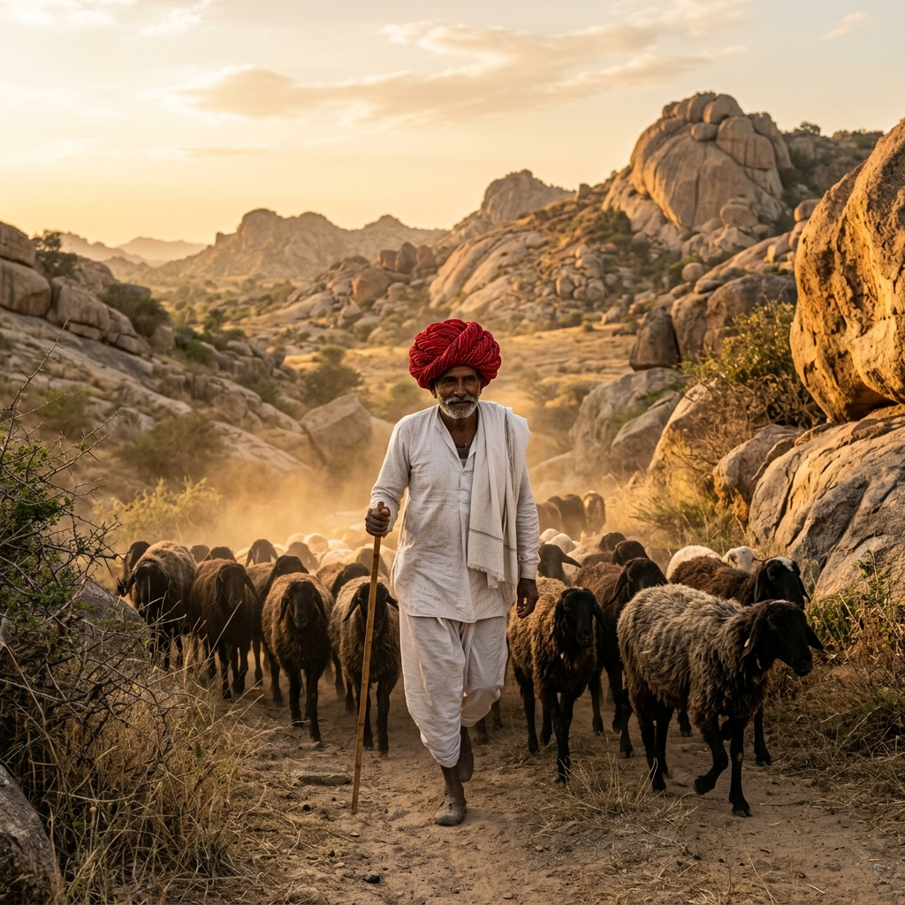

Rabari Tribe Cultural Walk
Step back in time and walk alongside the ancient guardians of Jawai. Explore the landscape with the Rabari pastoralists, discovering centuries-old herdsman customs and spiritual ecology.

Ancient Tribe
Living History
Learn the secrets of tracking and spiritual co-existence.
The Rabari (also known as Rewari) are a traditional nomadic pastoralist tribe who have inhabited the semi-arid regions of Rajasthan for over a thousand years. Clad in iconic large red turbans, white shirts, and dynamic silver jewelry, they share a deep, spiritual connection with Jawai's landscape and its wildlife.
Unlike typical wildlife reserves where fences divide humans and predators, Jawai features no borders. The Rabari walk their sheep and goats through the rocky hills daily, sharing paths with wild leopards. They view the leopards as sacred guardians of their local deity, Devgiri Cave Temple. This has resulted in a harmonious co-existence with zero man-leopard conflict.
Guided Heritage Walk
Walk alongside a Rabari elder who shares tracking techniques, plant medicinal secrets, and local wildlife lore.
Homestead Visit & Chai
Visit a traditional Rabari hamlet (Dhani), meet community members, and enjoy authentic wood-fired masala chai.
What the Heritage Journey Includes
Morning Pastoral Trail (07:30 AM - 10:00 AM)
Accompany the shepherds as they lead their herds out for daily grazing in the thorny scrub forests. Watch how the herdsmen communicate with their livestock using rhythmic whistling calls. Learn to identify leopard and hyena pugmarks in the soft sand and read the warning alarm calls of peacocks and langur monkeys.
Ancient Cave Shrines & Temples
Visit the local shrines carved naturally inside the giant granite caves. Your Rabari guide will share the sacred legends of the Devgiri Temple, where leopards are known to walk peacefully past the temple steps even during priest prayer sessions. Experience the deep spiritual reverence that underpins this unique ecological harmony.
Supporting the Local Rabari Community
At Leopard Trails, we believe in sustainable, community-first tourism. Our cultural walks are run in partnership with Rabari families, ensuring they receive direct economic benefits. We also sponsor local schooling initiatives, support traditional handicraft weaving, and help fund cattle insurance schemes to protect their traditional livelihoods.
Cultural Walk FAQ
How physically demanding is the walk?
The walk is custom-paced and generally easy to moderate, covering about 2 to 3 kilometers of flat sandy tracks and gentle granite inclines. We recommend wearing comfortable walking shoes, a sun hat, and carrying a bottle of water.
Are we allowed to take photos of the Rabari people?
Yes, the community members are extremely warm and welcoming. However, we always request that you ask for permission through your naturalist guide first out of respect. They are proud of their culture and enjoy seeing their portraits!
Can children participate in this walk?
Absolutely. It is an educational and inspiring experience for children, who love watching the goats, hearing the folk stories, and learning how to track animal footprints in the sand.
Walk with the Guardians of the Wilderness
Add a Rabari Cultural Walk to your stays reservation and experience the ancient human-wildlife harmony of Jawai first-hand.
Reserve Your Cultural Journey